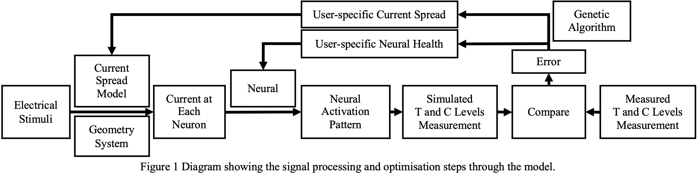

This project develops a computational model of hearing with cochlear implants using psychophysical loudness measurements for parameter optimisation.

X. Xia, D. X. Gao, T. Brochier and D. B. Grayden, "Estimating User-Specific Current Spread and Neural Health Parameters in a Model of Hearing with Cochlear Implants," 2024 46th Annual International Conference of the IEEE Engineering in Medicine and Biology Society (EMBC), Orlando, FL, USA, 2024, pp. 1-4.
Code release planned.